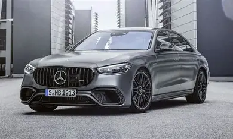
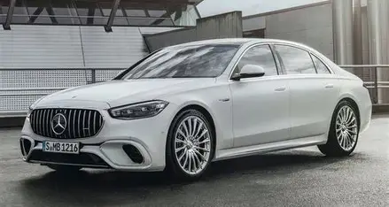

$1.800.000

merceder
Mercedes-Benz AG es una empresa alemana fabricante de vehículos,[3] subsidiaria de la compañía Mercedes-Benz Group.[4] La marca es reconocida por sus automóviles de lujo,[4] deportivos, autobuses, camiones, utilitarios (
$2.233.000

merceder
ntre otros. La famosa estrella de tres puntas, diseñada por Gottlieb Daimler, simboliza la capacidad de sus motores para